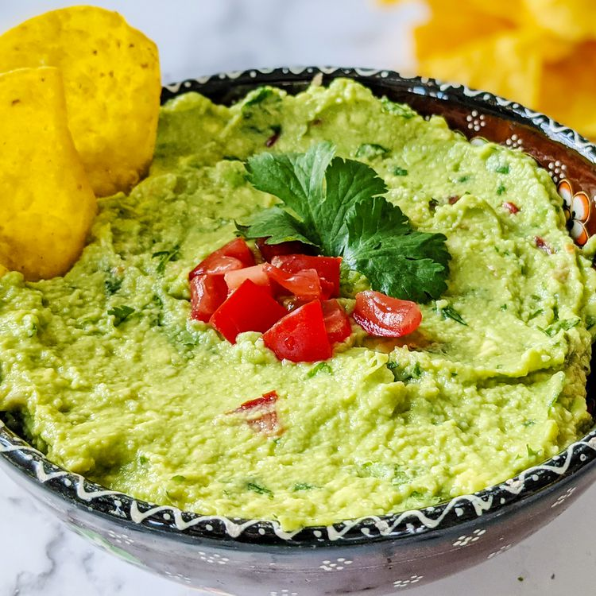

Guacamole

Guacamole
This guacamole recipe is super easy to make and it also tastes incredibly good.
It is the perfect dip to make for parties, gatherings, or for you when you are home alone.
Ingredients
- Three avocados
- One lime
- salt
- Two tomatoes
- ½ onion
- fresh cilantro
- 1 teaspoon minced garlic
Directions
- Mix avocados, lime and salt and add in the onions, cilantro, and the garlic.
- Refrigerate for about an hour so it can be served cool and fresh.
- Enjoy!